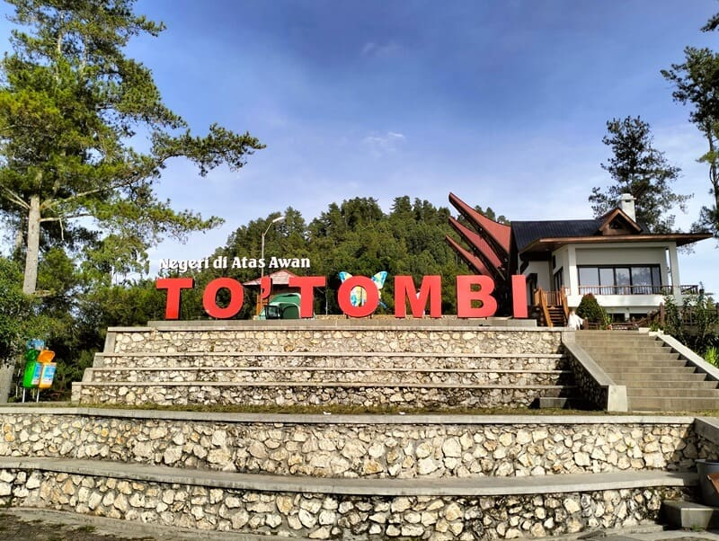

Lolai To’ Tombi menyuguhkan keindahan sekumpulan awan putih di depan mata. Tempat wisata tersebut berada di ketinggian sekitar 1300 mdpl (meter diatas permukaan laut) dan sering disebut-sebut sebagai negeri di atas awan.
To’ Tombi Toraja selalu banyak dikunjungi para wisatawan apalagi jika weekend tiba, karena disini kamu dapat melihat indahnya alam dari atas ketinggian. Jika hari mulai sore areanya akan diselimuti oleh kabut, yang membuat hawa menjadi semakin dingin.
Kabupaten Toraja Utara merupakan sebuah kabupaten yang menjadi bagian dari Provinsi Sulawesi Selatan. Lolai To’ Tombi sebuah tempat wisata yang sangat indah dan menakjubkan.

Perjalanan Menuju To’ Tombi Toraja
Perjalanan menuju To’ Tombi Toraja tidaklah mudah, dimana kamu harus melalui jalan yang berliku layaknya jalan menuju dataran tinggi. Jalan yang dilalui pun tidaklah terlalu lebar, namun masih bisa dilewati motor maupun mobil. Jika kamu menggunakan mobil, harus selalu waspada dan fokus.
Sesekali kamu akan menjumpai jalan dengan tanjakan yang sangat ekstrim, memang untuk menuju To’ Tombi Toraja jalannya didominasi oleh tanjakan. Kondisi alam selama perjalanan masih sangat asri, lebatnya pepohonan berjajar disamping kiri dan kanan jalan. Semakin mendekati lokasi pepohonannya semakin lebat dan udaranya mulai terasa dingin.